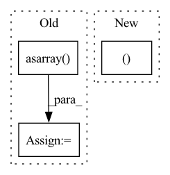

Pattern ID :35801
Before Change
if draw(st.shared(st.integers(1, 2), key="repeat_is_list")) == 2:
// If generating a list
repeat_size = draw(st.one_of(
st.just(1),
st.just(len(np.asarray( value, dtype=dtype) .flatten()) if axis is None else shape[axis])))
repeat = draw(helpers.dtype_and_values(After Change
if not isinstance(axis,int) and axis is not None:
axis = axis[0]
repeat_shape=(draw(st.one_of(st.just(1), st.just(shape[axis])))In pattern: SUPERPATTERN
Frequency: 9
Non-data size: 3
Instances Fragment ID: 101812656
Project Name: ivy-dl/ivy
Commit Name: 3a926dacd3754ad8b99a4f6cead169bb69de6d0e
Time: 2022-08-01
Author: ludwignemiro@yahoo.com
File Name: ivy_tests/test_ivy/test_functional/test_core/test_manipulation.py
M Class Name: AnonimousClass
N Class Name: AnonimousClass
M Method Name: _repeat_helper(1)
N Method Name: _repeat_helper(1)
M Parent Class:
N Parent Class:
M File Name: ivy_tests/test_ivy/test_functional/test_core/test_manipulation.py
N File Name: ivy_tests/test_ivy/test_functional/test_core/test_manipulation.py
M Start Line: 477
M End Line: 508
N Start Line: 518
N End Line: 539
Before Change
images = []
images.append(photo)
images = np.asarray( images)
images = torch.from_numpy(images)
if self.cuda:
images = images.cuda()
After Change
//---------------------------------------------------//
def detect_image(self, image):
image_shape = np.array(np.shape(image)[0:2])
old_width, old_height = image_shape[1], image_shape[0]
old_image = copy.deepcopy(image)
//---------------------------------------------------------//
Fragment ID: 101812661
Project Name: bubbliiiing/faster-rcnn-pytorch
Commit Name: d456f02a402fd8cf8db1d991aa612439b3c0ffb2
Time: 2021-01-30
Author: 47347516+bubbliiiing@users.noreply.github.com
File Name: frcnn.py
M Class Name: FRCNN
N Class Name: FRCNN
M Method Name: detect_image(2)
N Method Name: detect_image(2)
M Parent Class: object
N Parent Class: object
M File Name: frcnn.py
N File Name: frcnn.py
M Start Line: 99
M End Line: 172
N Start Line: 106
N End Line: 169
Before Change
r = np.random.randint(self.rotate)
mask = Image.fromarray(np.uint8(mask))
mask = mask.rotate(r)
mask = np.asarray( mask)
mask = mask[(hh - h) // 2:(hh - h) // 2 + h,
(ww - w) // 2:(ww - w) // 2 + w]
mask = torch.from_numpy(mask).to(x.dtype).cuda()After Change
mask = mask.expand_as(x)
if self.offset:
offset = (2 * torch.rand(
(h, w ), device=x.device) - 0.5).to(x.dtype)
x = x * mask + offset * (1 - mask)
else:
x = x * mask Fragment ID: 101812660
Project Name: alibaba/easycv
Commit Name: f8c9a9a1c958b17554827f0bac33cab069b72735
Time: 2022-11-23
Author: 30484308+Cathy0908@users.noreply.github.com
File Name: easycv/models/detection3d/utils/grid_mask.py
M Class Name: GridMask
N Class Name: GridMask
M Method Name: forward(2)
N Method Name: forward(2)
M Parent Class: nn.Module
N Parent Class: nn.Module
M File Name: easycv/models/detection3d/utils/grid_mask.py
N File Name: easycv/models/detection3d/utils/grid_mask.py
M Start Line: 116
M End Line: 143
N Start Line: 117
N End Line: 141
Before Change
rescale_losses = []
// auto resize
rf_net = np.asarray( 35) // denoiser net RF
area_rf = rf_net ** 2
area_scale_0 = 3110 // defined such that area_rf/area_scale0 ~= 40%
// area_ratio = area_rf/area_scale_0
s_dim = min(image_size[0], image_size[1])After Change
Path(path_to_save).mkdir(parents=True, exist_ok=True)
recon_image.save(path_to_save + filename)
return sizes, rescale_losses, scale_factor, n_scales
Fragment ID: 101812663
Project Name: fallenshock/sinddm
Commit Name: 63fa0df74339c013fdd3734f7c09d1f9caef16ef
Time: 2022-12-25
Author: you@example.com
File Name: SinDDM/functions.py
M Class Name: AnonimousClass
N Class Name: AnonimousClass
M Method Name: create_img_scales(6)
N Method Name: create_img_scales(8)
M Parent Class:
N Parent Class:
M File Name: SinDDM/functions.py
N File Name: SinDDM/functions.py
M Start Line: 126
M End Line: 178
N Start Line: 154
N End Line: 192
Before Change
// class_list = "[0,1||2]"
// output_classes = [0,1]
// this would make "1||2" be mapped to "1", and this mechanism can be extended for N possible combinations
final_mask += np.asarray( array_to_consider[i, ...], dtype=int)
else:
for i, _ in enumerate(class_list):
if final_mask is None:
final_mask = np.asarray(array_to_consider[i, ...], dtype=int) * int(i)After Change
if final_mask is None:
final_mask = idx * np.asarray(array_to_consider_bool[idx, ...], dtype=int)
else:
final_mask[array_to_consider_bool[idx, ... ]] = idx
else:
for i, _ in enumerate(class_list):
if final_mask is None: Fragment ID: 101812649
Project Name: cbica/gandlf
Commit Name: 85cf27d7f2b42c484aef8d27bb3198d5f2949f58
Time: 2022-03-12
Author: sarthak.pati@hotmail.com
File Name: GANDLF/utils/tensor.py
M Class Name: AnonimousClass
N Class Name: AnonimousClass
M Method Name: reverse_one_hot(2)
N Method Name: reverse_one_hot(2)
M Parent Class:
N Parent Class:
M File Name: GANDLF/utils/tensor.py
N File Name: GANDLF/utils/tensor.py
M Start Line: 112
M End Line: 137
N Start Line: 107
N End Line: 131
Before Change
ens_logits = ens_logits_fn(ens_logits)
// ens_prelogits [ens_size, batch_size, hidden_size]
ens_prelogits = jnp.asarray( [prelogits for _, prelogits in outputs])
// ens_prelogits [batch_size, hidden_size, ens_size]
ens_prelogits = jnp.transpose(ens_prelogits, axes=[1, 2, 0])
return ens_logits, ens_prelogitsAfter Change
outputs = [single_model_pred_fn(p, images) for p in params.values()]
// Both ens_logits and ens_prelogits are [ens_size, batch_size, hidden_size].
ens_logits, ens_prelogits = reshape_outputs_fn(outputs)
ens_logits = ens_logits_fn(ens_logits)
// ens_prelogits [batch_size, hidden_size, ens_size].
ens_prelogits = jnp.transpose(ens_prelogits, axes=[1, 2, 0]) Fragment ID: 101812634
Project Name: google/uncertainty-baselines
Commit Name: 1346019aaf9a99c131dd0e4f3dceda1952c2388a
Time: 2022-03-25
Author: rjenatton@google.com
File Name: baselines/jft/vmoe.py
M Class Name: AnonimousClass
N Class Name: AnonimousClass
M Method Name: ensemble_pred_fn(5)
N Method Name: ensemble_pred_fn(4)
M Parent Class:
N Parent Class:
M File Name: baselines/jft/vmoe.py
N File Name: baselines/jft/vmoe.py
M Start Line: 130
M End Line: 135
N Start Line: 104
N End Line: 136
Before Change
fuzz : float, optional
Fuzz used to avoid nans in logit
x = np.asarray( x)
x = np.divide(1, 1 + np.exp(-x))
log_J = np.log(np.abs(x - x ** 2))
x *= (1 + 2 * fuzz)
x -= fuzzAfter Change
x *= (1 + 2 * fuzz)
x -= fuzz
log_j += np.log(1 + 2 * fuzz)
return x, log_j
rescaling_functions = {"logit": (logit, sigmoid)}
Fragment ID: 101812637
Project Name: mj-will/nessai
Commit Name: efd0febbb8dabbe6855b918f21169437664f3acc
Time: 2021-08-23
Author: m.williams.4@research.gla.ac.uk
File Name: nessai/utils/rescaling.py
M Class Name: AnonimousClass
N Class Name: AnonimousClass
M Method Name: sigmoid(2)
N Method Name: sigmoid(2)
M Parent Class:
N Parent Class:
M File Name: nessai/utils/rescaling.py
N File Name: nessai/utils/rescaling.py
M Start Line: 300
M End Line: 305
N Start Line: 320
N End Line: 326